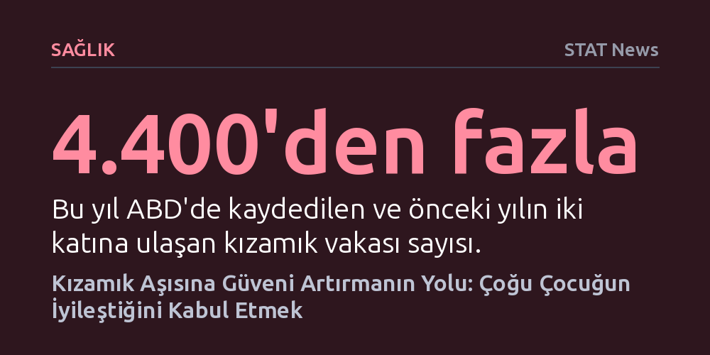

SAGLIK · STAT News · 2026-10-22
Halk sağlığı yetkililerinin kızamık aşılarına güveni artırmak için çoğu çocuğun hastalığı atlattığı gerçeğini açıkça kabul etmesi gerekiyor. Korku temelli felaket senaryoları yerine bu gerçeğin onaylanması, aşıların toplumsal faydasını ve gerçek riskleri anlatmada inandırıcılık sağlıyor.
Aşı tereddüdüyle mücadelenin yolunun hastalığın tehlikelerini abartmaktan değil, halkın zaten bildiği gerçekleri dürüstçe onaylayıp nesnel verilere odaklanmaktan geçtiğini gösteriyor.

Amerika Birleşik Devletleri'nde bu yıl kayıtlara geçen kızamık vakaları 4.400'ü aşarak bir önceki yılın iki katına ulaştı. Ülke genelinde 1.600'den fazla ilçede çocukluk çağı aşılama oranlarının düzenli olarak gerilemesi, son derece bulaşıcı olan bu virüsün kontrolsüzce yayılmasına zemin hazırlıyor. Ancak tablo bu denli ciddileşirken, kamu sağlığı otoritelerinin benimsediği geleneksel uyarılar toplumda beklenen etkiyi yaratmıyor. Yapılan araştırmalar, vaka patlamalarına rağmen ebeveynlerin yarıdan fazlasının kızamıktan hiçbir şekilde endişe duymadığını ortaya koyuyor.
Yetkililerin uzun yıllardır sürdürdüğü iletişim dili, hastalığın en ağır ve ölümcül sonuçlarını öne çıkarmaya dayanıyordu. Hastalık Kontrol ve Önleme Merkezleri'nin (CDC) hazırladığı afişlerde kızamığın sıradan bir döküntü olmadığı kalın harflerle vurgulanıyor, yerel sağlık yöneticileri 40 derecenin üzerindeki havale nöbetlerini ve ağır vaka öykülerini halkla paylaşıyordu. Ne var ki bu korkutma taktiği insanları aşıya yönlendirmek yerine sağlık kurumlarına duyulan güveni aşındırıyor ve ebeveynlerin felaket senaryolarını abartılı bularak mesajlara tamamen kulak tıkamasına yol açıyor.
Mevcut iletişim stratejisinin duvara toslamasının temelinde, toplumun hafızasındaki yerleşik deneyimler yatıyor. Aşının henüz geliştirilmediği 1960'lı yıllarda kızamık, çocukların birkaç gün yatakta dinlenip atlattığı olağan bir çocukluk evresi olarak görülüyordu. Hatta dönemin ünlü televizyon dizilerinde çocukların kızamık oldukları için okula gitmeyeceklerine sevinmesi gibi sahneler, bu hastalığın toplumsal bellekte zararsız bir anı gibi kodlanmasına neden oldu. Günümüzde aşıya kuşkuyla yaklaşan birçok aile, kendi anne babalarından duydukları 'hepimiz geçirdik ve hayattayız' argümanına sığınıyor.
Kamu sağlığı kurumları halkın bizzat tecrübe ettiği bu geçmişi yok sayıp kızamığı doğrudan ölümcül bir trajedi gibi yansıttığında, aşı karşıtı hareketlerin eline büyük bir koz vermiş oluyor. Otoritelerin gerçekleri gizlediği ya da abarttığı iddiası zemin kazanıyor ve ebeveynler resmi kurumların samimiyetini sorgulamaya başlıyor. İletişim uzmanlarına göre, insanların kendi bildikleri tecrübeyi inkar etmek güven inşa etmenin önündeki en büyük engeli oluşturuyor.
Sağlık iletişimi uzmanları, bu tıkanıklığı aşmak için ilk bakışta sezgilere aykırı görünen bir öneride bulunuyor: Çoğu çocuğun kızamığı sorunsuz şekilde atlattığını açıkça ve dürüstçe kabul etmek. Ebeveynlerin zaten tanık olduğu bu gerçeği onaylamak, sağlık görevlilerine inanılırlık kazandırıyor. Uzmanlar, çocukların çoğunun iyi olacağını kabul etmenin, güvenli ve etkili bir aşı varken neden 'çoğunun' yeterli olmadığını anlatabilecek meşruiyeti sağladığını vurguluyor.
Bu strateji, riskleri tamamen gizlemek veya küçümsemek anlamına gelmiyor; aksine gereksiz dramatikleştirme yapmadan somut verilere odaklanmayı gerektiriyor. CDC verilerine göre kızamığa yakalanan her bin kişiden biri ila üçü hayatını kaybediyor. İletişim uzmanları, bu yalın istatistiğin tek başına yeterince çarpıcı olduğunu ve dramatikleştirmeye ihtiyaç duymadan insanları ikna edebileceğini belirtiyor. Ayrıca nadir görülen ölüm vakaları yerine, günlerce düşmeyen yüksek ateş ve hırpalanan hasta bir çocuğa bakmanın getirdiği yaygın zorlukları anlatmak ebeveynlerle çok daha gerçekçi bir bağ kuruyor.
Eski yıllara duyulan tehlikeli nostaljiyi yıkmanın yolu, tıp biliminin bugün kızamık hakkında 1960'lara kıyasla çok daha derin bilgilere sahip olduğunu anlatmaktan geçiyor. 2019 yılında yapılan çığır açıcı bir araştırma, kızamık geçiren çocukların diğer bulaşıcı hastalıklara karşı önceden edindikleri koruyucu antikorların önemli bir kısmını kaybettiğini, yani bir tür 'bağışıklık amnezisi' yaşadığını gösterdi. Geçmişte masum sanılan bu virüsün aslında bağışıklık sistemini sıfırlayarak çocuğu başka tehlikelere açık bıraktığı gerçeği, geçmişe yönelik sahte güven hissini bilimsel verilerle çürütüyor.
Bunun yanı sıra uzmanlar, aşı mesajının yalnızca tek bir çocuğun bireysel çıkarı üzerinden değil, ortak toplumsal fayda üzerinden kurulması gerektiğini ifade ediyor. Sağlıklı bir çocuk hastalığı hafif atlatsa dahi, virüsü aşılanamayacak kadar küçük bebeklere veya bağışıklığı baskılanmış bireylere bulaştırarak onların hayatını tehlikeye atabiliyor. Yapılan geniş kapsamlı anketler, aşının ortak toplumsal yararını vurgulayan anlatıların ebeveynlerin aşıya olan inancını ve desteğini anlamlı ölçüde güçlendirdiğini ortaya koyuyor.